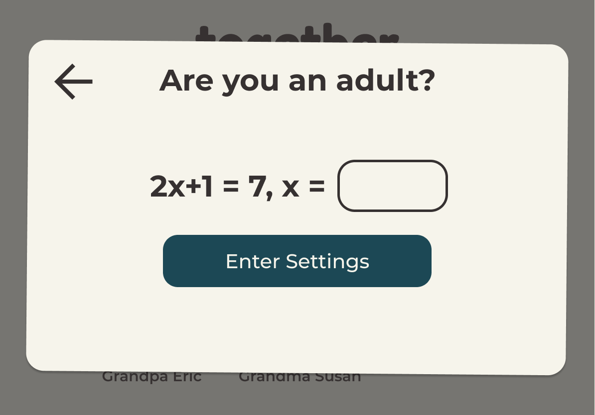

Objective
To design an interface for an emerging startup, create an interactive mockup, anad iteratating off of critique. The project was completed with a group of 4 UI/UX students.
Introduction
Our concept was based on Together, a tablet app video chat designed to connect kids to their grandparents and long-distance through activities like reading a book and playing games. We created the interface with the following goals in mind:
- Easy for grandparents without technological experience to learn
- Usable for children without the ability to read
- Inviting and engaging for families
- Safe and secure so that parents can control their children's use of technology
From our original sketch to our current prototype, we’ve received a lot of feedback about user flow, design choices, and making each element clear and purposeful.
Sketching
Our group brainstormed design ideas, exploring multiple alternatives

We focused on the following screens:
-
Home screen, where the user can click on a profile picture to initiate a call
-
Call screen, where they can video chat and also pull up games that live on a shelf on the left
-
Settings, which are protected from child access
Critique
During our critique, we got the following feedback:
- More specific labeling and directions for the activity icons
- Making the app kid-safe, protecting the settings
- Consider a parental perspective in terms of protecting children
- Show physical differences for font size
- Some settings don't really make sense as buttons
- No clear way to exit from activities
- General compliments on aesthetic and interface
We made the following updates
In call buttons
We added text labeling each button, added contrast to the colors of each button, and created an ‘x’ in the description area that allows the user to exit the activity.
Child safety features
We wanted to ensure that parents had some control over how kids could interact with the app, and after debating possible solutions, we included a math problem before granting access to the settings. We thought that this would provide enough protection to deter kids, but not make it a hassle for grandparents and parents to access, as passwords can be confusing and hard to remember.
Settings clarification
We renamed some settings and included sliders instead of only buttons. For example “contact filter” was renamed “can add new contacts”, and font size and color contrast are sliders. We also made the changes in text size more obvious.
Final Result
You can find an interactive prototype here